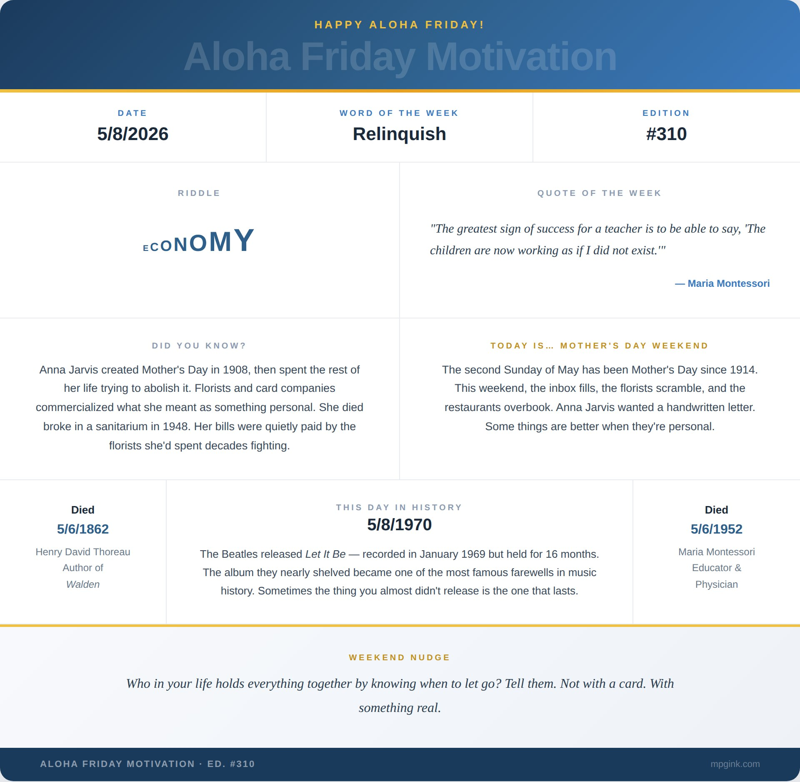

Happy Aloha Friday. 🌺
Henry David Thoreau didn't leave Walden because he failed. He left because he was done. Two years, two months, two days — and then he picked up and walked away. He wrote later: "I left the woods for as good a reason as I went there. Perhaps it seemed to me that I had several more lives to live, and could not spare any more time for that one." His last words, years later when tuberculosis finally caught him, were "Now comes good sailing." The man knew how to let go.
Maria Montessori died on the same date — May 6th — exactly ninety years later. Her whole philosophy was built on the same principle from the opposite direction. She didn't walk away from something. She built something and then deliberately made herself invisible inside it. The greatest sign of success for a teacher, she said, is to be able to say the children are now working as if I did not exist. Step back. Trust. Release. Let the thing you built become its own.
Two people. One date. The same quiet wisdom arriving from different angles.
This Mother's Day weekend I find myself thinking about all the women in my life who understand this instinctively — who hold everything together precisely because they know when to loosen their grip.
My mother sends greeting cards, birthdays, holidays, any days. Not emails. Cards — always with a handwritten note that somehow cuts directly to the center of whatever our relationship is at that exact moment in time. She raised me and then she let me go — to Kauai, to Alabama, to whatever the next adventure was — and the cards kept arriving. Right on time. Every time. She has this radar. I don't know how she does it.
And then there is Tiffany.
Seventeen years. My partner in crime, my concert compatriot — she has seen close to 100 Phish shows at this point, and because she wants to, not because of me, and don't get her started on Dave. She is the sanity to my whirlwind nature, the necessary pain in my neck that grounds me while somehow also telling me I can do anything. A middle aged man, such as myself, still needs someone to whisper that to him from time to time.
We have navigated relocations — Hawaii, Alabama, Connecticut. Uncertain pandemic times. Chaotic early childhood years. Four dogs rescued everywhere we ever lived: two from Connecticut, one from Kauai, one from Birmingham. That last part was entirely her doing. You don't argue with her negotiating skills. You just end up with another dog and somehow feel good about it.
One winter night we left MSG after hours of dancing, picked up our usual halal special, and I made her walk all the way to Gramercy Park. 1.2 miles through a dimly lit city in the dead of winter. She never lets me live it down. It wasn't the first late night wandering through the city and it wouldn't be the last.
We finish each other's sentences. We say the thing the other is thinking. Maybe it's habit. Maybe it's what happens after spending this much time with the same person. But it never gets old. When I am with her, I never get old.
Over the last six years, as we have watched our kids grow, we have had to relinquish things. She relinquished parts of the professional life she had built. We both relinquished the loose, unstructured version of ourselves — the last-minute dashes to a Yankees game, the spontaneous Sunday drives up the 95 corridor hunting for the best hot lobster roll. Yes, hot. Is there any other kind? We left CT in 2014 thinking we would never be back to live here again. Two kids and four dogs later, here we are back in CT. We do all of this with a smile. She does it better.
I've written a lot about her over the years. Inspired by her. Recounting our greatest triumphs of random gallivanting. None of it quite captures it. So here, in full, is the one I wrote for her — a poem about a night in New York City that she still holds over my head, in the best possible way:
I'll admit, I've been known to make you walk
once left Madison Square, arrived at Gramercy Park
well I'm not gonna lie, but you know you can't talk
when this city ignites, its your low heeled spark
We slipped past Broadway, we skipped the subway
missed the West Side Highway, though tried as we may
watched Saturday night slip into Sunday
Strolled down the Bowery, passed every taxi
we blinked and missed the financial district
and found ourselves wound up at the Ground Z
But it was New Year's Eve in New York City
raced back up town to MSG
swam in that Phish bowl with all the hippies
Cause this is New York, like an adderall addled kid never sleeps
Time Square Neon popping permanent daylight creeps
Tribeca Grand, try to make a stand, likes it shaken, stirred but never neat
Hell's Kitchen, you better quit your bitchin' and watch your back, she's packing heat
Thoreau stepped out of the woods because he had several more lives to live. Montessori stepped back from the classroom so something real could grow without her. The Beatles sat on Let It Be for sixteen months, nearly shelved it entirely, and then released it anyway on this date in 1970. Sometimes the thing you almost didn't put into the world is the one that lasts.
To every mother out there — the ones who hold it together, who know when to step in and when to step back, who get the cards in the mail right on time — this one is for you.
Tiffany. You make our family a family. You make our house a home. I am a better man for having you in my life.
Weekend Nudge: Who in your life holds everything together by knowing when to let go? Tell them. Not with a card. With something real.
Mahalo Nui. 🌺
— Matthew
